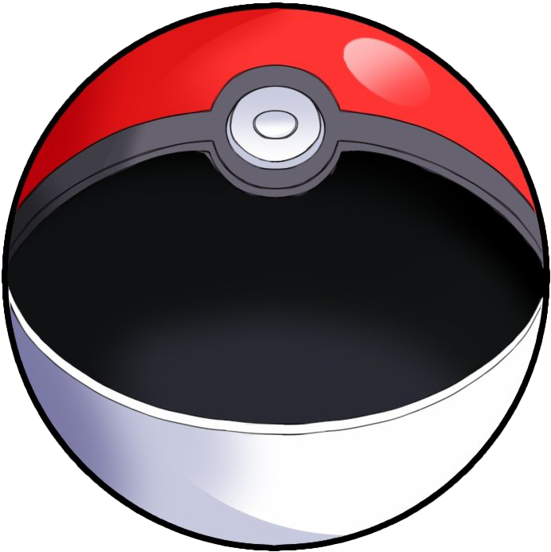

-
Bulbasaur


- Grama
- Veneno
A característica mais notável deste Pokémon é o bulbo de cebola na sua parte traseira, que cresce de uma semente em suas costas plantada por sua mãe ao nascer.
-
Ivysaur

- Grama
- Veneno
Depois de evoluir de Bulbasaur, Ivysaur cresce pequenas presas e tem entranhas de ouvido visíveis. A pele do Ivysaur também é um pouco mais azul do que de Bulbasaur. A mais notável diferença na aparência do Ivysaur, no entanto, é que sua lâmpada se transformou em um botão de flor rosa com folhas estendendidas.
-
Venusaur

- Grama
- Veneno
Venasaur é um Pokémon quadrúpede com pele verde acidentada, e azulada. Ele tem olhos pequenos e circulares vermelhos, dois dentes pontiagudos em sua mandíbula superior, e quatro dentes pontiagudos em sua mandíbula inferior. Tem três dedos com garras em cada pé. Possui um grande coqueiro em suas costas.
-
Charmander

- Fogo
A chama que arde na ponta da cauda é uma indicação das suas emoções. A chama vacila quando Charmander está desfrutando de si mesmo. Se o Pokémon fica furioso, a chama queima ferozmente.
-
Charmeleon

- Fogo
Charmeleon impiedosamente destrói seus inimigos usando suas garras afiadas. Se ele encontrar um adversário forte, verifica-se agressivo. Neste estado animado, a chama na ponta da cauda se inflama com uma cor branca azulada.
-
Charizard

- Fogo
Charizard voa em torno do céu em busca de adversários poderosos. Ele respira fogo de tão grande calor que derrete qualquer coisa. No entanto, nunca vira a sua respiração ardente em qualquer adversário mais fraco do que o próprio.
-
Squirtle

- Agua
O casco de Squirtle não é apenas usado para a proteção. A forma arredondada do casco e as ranhuras em sua superfície ajudam a minimizar a resistência na água, permitindo que este Pokémon nade em altas velocidades.
-
Wartortle

- Agua
Sua cauda é grande e coberta com uma pele rica, espessura. A cauda torna-se cada vez mais profunda em cor com a idade de Wartortle. Os arranhões na seu casco são provas de resistência deste Pokémon como um combatente.
-
Blastoise

- Agua
Blastoise tem canhões de água que se projetam de seu casco. Os canhões de água são muito precisos. Eles podem disparar balas de água com uma precisão suficiente para atacar latas vazias de uma distância de mais de 160 pés.
-
Caterpie 

- Inseto
Caterpie tem um apetite voraz. Ele pode devorar as folhas maiores do que o seu corpo bem diante dos seus olhos. A partir de sua antena, este Pokémon libera um odor terrivelmente forte.
-
Metapod

- Inseto
O escudo que cobre o corpo deste Pokémon é tão duro como uma laje de ferro. Metapod não se move muito. Ele ainda permanece assim porque está preparando suas entranhas macias para a evolução dentro da casca dura.
-
Butterfree

- Inseto
- Voador
Butterfree tem uma capacidade superior para procurar um delicioso mel de flores. Ele pode até mesmo buscar, extrair, transportar e mel de flores que estão florescendo mais de seis milhas do seu ninho.
-
Pikachu

- Elétrico
Pikachu é um Pokémon roedor meio gordinho, com o pêlo amarelo em todo o seu corpo. As orelhas de Pikachu são longas e chegam a um ponto com pontas pretas..
-
Raichu

- Elétrico
Este é um roedor grande um Pokémon bípede. Sua pele é laranja, rabo grosso, escuro como fios de alta tensão que termina em um relâmpago e totalmente plano, também pode suportar cargas pesadas de eletricidade.
-
Mewtwo

- Psíquico
Mewtwo é um Pokémon que foi criado por manipulação genética. No entanto, mesmo que o poder científico dos humanos tenha criado o corpo deste Pokémon, eles não conseguiram dotar Mewtwo com um coração compassivo.